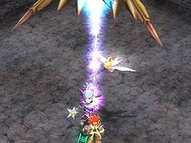
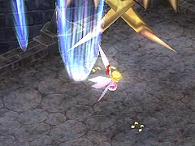
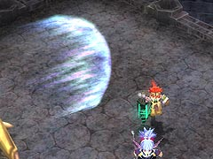
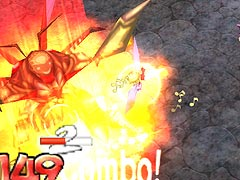

目次 > ゲームについて > 日本Falcom 攻略 > ZWEI II > ボス戦 > ベルゼバブ
らんの眼
ZWEI II (ツヴァイ 2、ZWEI II Plus)
| 概要 | 情報 | 攻略チャート |
| フード交換 | ペットについて | ボス戦 |
| 敵キャラ一覧 | ハンターランク | G-コロッセオ |
| アイテム一覧 | ガジェット一覧 | トレジャー一覧 |
| ダンジョン一覧 | クリアデータ特典 | Plusの追加要素 |
| ZWEI II攻略へ | 目次へ戻る |
| ベルゼバブ 空中 |
| 「Zwei !!」最強のボスのベルゼバブですが、「Zwei !!」と比べ遙かに弱体化しているので必要以上に恐れる必要はありません。 空中の場合は、高さやダメージも考慮してアルウェンの「焦熱の魔法」が有効です。 攻撃方法として、ベルゼバブの真下をぐるぐる周りながら魔法を連発すればいいです。よほど変な動きをしない限り、ベルゼバブの攻撃もかわせ、しかもダメージが与えられるので便利です。  ベルゼバブの攻撃として、雷と衝撃波があります。まず雷ですが、1 つだけ雷を落とす場合と、複数雷を落とす場合がありますが、どちらもベルゼバブの真下をぐるぐる回ればまず食らいません。  次に衝撃波ですが、こちらは強烈な追尾能力があり不用意に動くとまず当たってしまいます。そのため、ベルゼバブの真下を小さな円を描きながらぐるぐる回ってください。 |
| ベルゼバブ 地上 |
| 空中で一定時間行動すると、ベルゼバブは地上に降りてきます。もしかしたら一定ダメージを与えると無条件で降りてくるのかもしれませんが。 攻撃方法としては、ベルゼバブが空中にいる時と同様、「焦熱の魔法」が便利です。  地上のベルゼバブの攻撃として、まず衝撃波があります。この衝撃波は空中から放つものと違い、直線にしか飛ばないので簡単によけられます。  そして「Zwei !!」では笑ってしまうほどの大ダメージを与えてもらったビッグ・バンですが、弱体化しておりダメージを受けても即死することはないでしょう。 体を丸めたときがビッグ・バン発動の合図で、ベルゼバブの周囲が爆発し地面を衝撃波が走ります。アルウェンの場合、ベルゼバブから距離を取っているはずなので、発生した衝撃波をジャンプすればいいです。 「Zwei !!」では「こぼるたんX」の次に強く、ボスとしては実質最強だったベルゼバブですが、弱体化してしまうと悲しくて仕方ありません。まあ、前作では”理不尽なまで強かった”ので、あの戦闘を「ZWEI II」でも再体験させられるのは嫌なのですけれどね。 |
| 概要 | 情報 | 攻略チャート |
| フード交換 | ペットについて | ボス戦 |
| 敵キャラ一覧 | ハンターランク | G-コロッセオ |
| アイテム一覧 | ガジェット一覧 | トレジャー一覧 |
| ダンジョン一覧 | クリアデータ特典 | Plusの追加要素 |
| ページの上部へ | ZWEI II 攻略へ | 目次へ戻る |